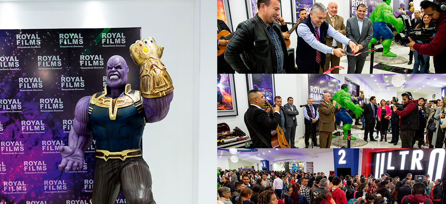

Estrenos del mes
Por: Jerrika Lozano
Para esta temporada nada mejor que ir a cine y ver los últimos estrenos de la cartelera, con el excelente servicio y la comodidad de los Multicines de Royal Films. ¡El mejor plan para toda la familia; disfrutar de las mejores películas y al mejor precio!
¡LLEVAMOS LA EXPERIENCIA DEL CINE A OTRO NIVEL!
En Royal Films contamos con las novedosas salas 4DX, una de las tecnologías más avanzadas que ofrece una experiencia cinematográfica totalmente envolvente.
La nueva sala 4DX excede la tercera dimensión, además de una proyección y sonido de alta calidad, la sala cuenta con efectos multisensoriales, sillas con movimiento, efectos ambientales como el viento, burbujas, y aroma, trabajan en perfecta sincronía con la acción en la pantalla.
Cada silla está equipada con simuladores programados para realizar movimientos básicos y poder crear un sin fin de combinaciones posibles para imitar acciones tales como volar y conducir.
Además de los movimientos, la sala está equipada con efectos ambientales para mejorar aún más la experiencia. A partir de un juego de luces para simular una tormenta, ventiladores para recrear brisas suaves, rociadores para generar sensación de humedad y esencia de olor real.

Gran apertura MULTICINE ROYAL FILMS MILENIO PLAZA
Royal Films, cada vez más cerca de ti.
El 11 de Abril, una fiesta hecha cine se tomó el Centro Comercial Milenio Plaza en la ciudad de Bogotá, la celebración tenía un claro porqué… Royal Films abrió su tercer complejo de cine en la capital del país.
Seis salas adecuadas para la comodidad de los amantes del séptimo arte se inauguraron en este Centro Comercial y lo mejor de todo es que las personas podrán disfrutar de formatos 2D, 3D y la primera sala Ultra de Bogotá.
¿Qué son las salas Ultra? Este novedoso espacio, cuenta con 355 sillas aproximadamente, una pantalla más amplia que las regulares; por supuesto el sonido no se queda atrás, está equipado con sistema de sonido Dolby, una tecnología que le da vida a la narración al permitir mover los sonidos en cualquier dirección de la sala de cine.
Como si esto fuera poco, Royal Films trajo con la apertura de este complejo, mayor color y saturación en la imagen, así es, estas salas de cine cuentan con proyección láser, una novedosa tecnología que podrán disfrutar todos los asistentes a este centro comercial.
La inauguración de este nuevo complejo terminó con buen cine, los asistentes disfrutaron de varias películas, un rato agradable y de la alegría de tener a Royal Films, cada vez más cerca de sus hogares.
DETECTIVE PIKACHU
9 DE MAYO
Primera película de imagen real de la franquicia basada en el videojuego Pokémon, “Detective Pikachu”. La historia comienza cuando el detective Harry Goodman desaparece misteriosamente y su hijo Tim de 21 años intenta averiguar qué ha pasado. A la investigación se suma el Detective Pikachu, una adorable criatura con un ácido sentido del humor. Al descubrir que pueden comunicarse entre sí de manera única, Tim y Pikachu unen fuerzas en una emocionante aventura para resolver el extraño misterio. Juntos recopilarán pistas a través de las calles de Ryme City, una moderna metrópolis donde los humanos y los Pokémon viven en armonía y en un mundo híper-realista.
AFTER: AQUÍ EMPIEZA TODO
AFTER / 9 DE MAYO
Con más de mil millones de visualizaciones, After se ha convertido en el mayor fenómeno de la historia de la plataforma Wattpad. Basado en la novela fan fiction de One Direction y fenómeno mundial escrito por Anna Todd, After cuenta la historia de Tessa Young (Josephine Langford) quien cursa su primer año en la universidad. Acostumbrada a una vida estable y ordenada, su mundo cambia cuando conoce a Hardin Scott (Hero Fiennes Tiffin), un misterioso joven de oscuro pasado. Desde el primer momento se odian, porque pertenecen a dos mundos distintos y son completamente opuestos. Sin embargo, estos dos polos opuestos pronto se unirán y nada volverá a ser igual. Tessa y Hardin deberán enfrentarse a difíciles pruebas para estar juntos. La inocencia, el despertar a la vida, el descubrimiento sexual y las huellas de un amor tan poderoso como la fuerza del destino.
MAMÁ AL VOLANTE
16 DE MAYO
Mamá al Volante cuenta la historia de Fabiana una mamá que luego de que se esposo se enferma, tiene que hacerse cargo del carro que le da el sustento al hogar y enfrentarse al rudo mundo de los taxistas, mientras que su marido tiene que hacerse cargo de las labores de la casa donde no da pie con bola.
JOHN WICK III: PARABELLUM
16 DE MAYO
John Wick (Keanu Reeves) regresa a la acción con una recompensa de 14 millones de dólares colgando sobre su cabeza y con un ejército de mercenarios persiguiéndolo. Tras asesinar a uno de los miembros del gremio de asesinos al que pertenecía, Wick es expulsado de la organización y se convierte en el blanco de miles de asesinos a sueldo que esperan detrás de cada esquina para deshacerse de él.
ALADDÍN
23 DE MAYO
Adaptación de acción real del clásico animado de 1992, es dirigida por Guy Ritchie a partir del guion de John August. El elenco de la nueva película de Disney incluye a: Will Smith, nominado dos veces al premio Oscar, como el Genio que tiene el poder de conceder tres deseos a quien posea su lámpara mágica; Mena Massoud como Aladdín, el infortunado pero agradable joven callejero que está enamorado de la hija del Sultán; Naomi Scott como la Princesa Jazmín, la hermosa hija del Sultán, que quiere decidir cómo llevar adelante su vida; Marwan Kenzari como Jafar, un malvado hechicero que crea un plan perverso para derrocar al Sultán y gobernar Agrabah y Navid Negahban como el Sultán, líder de Agrabah, que espera ansiosamente hallar un esposo adecuado para su hija.
GODZILLA II: REY DE LOS MONSTRUOS
GODZILLA II: KING OF THE MONSTERS / 30 DE MAYO
Sigue los heroicos esfuerzos de los criptozoólogos de la agencia Monarch mientras tratan de enfrentarse contra un grupo de enormes monstruos, incluyendo el propio Godzilla. Entre todos intentan resistir a las embestidas de Mothra, Rodan o del último némesis de la humanidad: King Ghidorah. Estas ancianas criaturas harán todo lo posible por sobrevivir, poniendo en riesgo la existencia del ser humano en el planeta.